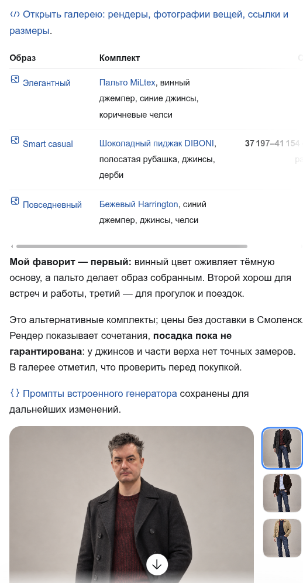
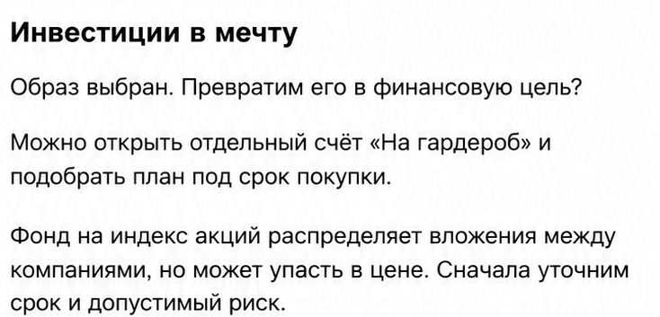

Агенты станут точкой входа вместо сайтов и приложений
Люди начнут решать задачи в агенте, а не открывать сайт или приложение конкретного сервиса. Поставщик перестанет контролировать первый контакт с клиентом.
Центральное скилохранилище / Магазин скиллов для открытых агентов
Люди начнут решать задачи в агенте, а не открывать сайт или приложение конкретного сервиса. Поставщик перестанет контролировать первый контакт с клиентом.
Пользователи смогут свободно устанавливать сторонние скиллы и паки, не ограничиваясь магазином владельца агента. Закрытые экосистемы не займут весь рынок.
Агент пользователя свяжет уже подключённые скиллы без отдельной интеграции или договора между их поставщиками. Речь о стоимости связи, а не о стоимости доступа к самим сервисам.
Человек приходит за одной услугой и по своему выбору переходит к другой в том же диалоге. Пример: пришёл подобрать одежду, использовал её цену как цель накопления у банка.
Что проверяем: подбор одежды привлекает человека в пак. Возможная ценность для Т‑Инвестиций — дополнительные первые взносы. Если больше бытовых задач начнётся в агентах, этот канал может стать важнее. Но его эффект проверяется отдельно.
Инвесторский питч / Хакатон
Пользователь устанавливает готовый комплект скиллов в своего агента и решает бытовую задачу. Поставщик получает возможность предложить сложную услугу в подходящий момент. Скилохранилище подключает поставщика и сверяет результат. По модели поставщик платит за подтверждённое действие; частью выплаты делимся с пользователем.
Стилист и интеграция с каталогом Ozon — наши скиллы. Копилка Т‑Инвестиций — пример услуги для первого предлагаемого пилота. Коммерческого договора нет.
Начинаем со своего пака. Когда подтвердим конверсию и экономику, подключаем других поставщиков и открываем курируемый каталог сторонних скиллов.
Рынок / Что добавляем
Hermes и OpenClaw — открытые агенты. ClawHub и skills.sh помогают ставить скиллы и паки; SkillFoxx уже подбирает инструменты под задачу.
По данным Vercel, на skills.sh за семь месяцев — почти 280 млн установок скиллов по всему каталогу. Это установки, не число людей.
Отбираем готовые бытовые сценарии, а не отдельные инструменты. Пользователь сначала решает свою задачу. Если по ходу возникает потребность в услуге партнёра, он может добровольно перейти к ней. Первый тест — может ли партнёр подтвердить заявку. Оплату проверяем отдельно в коммерческом пилоте.
Первый тест: образ → сохранённый план накопления → заявка, которую может подтвердить партнёр.
Стартуем на открытом стеке: в одном агенте, где можно подключить свой пак. Надёжной оценки доли открытых агентов среди пользователей бытовых сценариев в РФ мы не нашли. Для первого теста нужна доступная аудитория одного агента, а не массовый рынок.
01 / Пользователь и продукт
Первый сегмент: люди, которым нужен комплект одежды к событию и которые не готовы купить всё сразу.
Идеи в чате, размеры и цены в карточках Ozon, сумма и график взносов отдельно. Замена вещи — новый расчёт. Потери времени пока не замеряли.
Подходящий комплект в своём размере, проверенная общая цена и решение: купить, заменить позиции или копить к дате.
Стилист учитывает мерки, посадку и дресс-код. Интеграция с Ozon сверяет цену и наличие нужного варианта. На выходе — комплект с конкретными позициями, ссылками и общей суммой, а не список идей.
Методика стилиста: сравниваем мерки и размерные сетки, учитываем посадку, сочетаем вещи под повод и бюджет. Интеграция: ищем конкретные варианты Ozon, сверяем данные и считаем комплект. Агент координирует эти действия; без методики и подключения к каталогу одного запроса недостаточно.
Первый запуск планируем в Hermes; переносимость в OpenClaw проверяем отдельно. Для реферального пилота нужны правила канала и договор с партнёром.
02 / Сквозной сценарий
«Образ на свадьбу, без каблуков». Стилист уточняет мерки и бюджет, подбирает сочетаемые вещи и объясняет посадку.
Скилл запрашивает конкретные варианты в каталоге Ozon: размер, наличие и цену. Пользователь получает ссылки и сумму; непроверенные позиции помечаем.
Пользователь сам решает отложить покупку. Агент переносит цену в план, уточняет срок и показывает взносы. Уместность — выбор пользователя, не повод навязать оффер.
После явного согласия — виртуальный взнос в песочнице. В коммерческом пилоте поставщик должен подтвердить первый реальный взнос в новую копилку. Выплата и бонус возможны только по согласованным условиям.
Скриншоты / Подбор и копилка


Макет сообщения. Не запись открытия счёта или взноса.
03 / Модель экономики
Отдельная модель на 30 дней, не результат 14-дневной проверки сценария. Ставки и конверсии условные, договора нет. Доход от Ozon — 0 ₽. Стилист привлекает в пак; ценность для банка — дополнительные первые взносы. Активация пользователя означает, что он решил первую полезную задачу в паке.
Все выплаты банка ÷ дополнительные первые взносы сверх контрольной группы без канала. Не то же самое, что ставка за один взнос.
Выплаты минус бонусы и переменные расходы ÷ вся когорта, включая тех, кто не пополнил счёт. Без постоянных расходов и налогов.
30 000 ₽ выплаты банка − 12 000 ₽ бонусы − 1 000 ₽ обработка − 15 000 ₽ привлечение и обслуживание = 2 000 ₽ вклад когорты.
Бонус: 480 ₽ за взнос. Конверсия: 2,5%. Безубыточность по переменным расходам: 23 взноса (2,3%).
25 взносов − 10 в сопоставимой группе = 15 дополнительных. Контроль и выплаты условные. Без договора вклад при тех же затратах: −15 ₽ на пользователя.
04 / Что проверено
Есть рабочий пример подбора и визуальной примерки. Живую сверку каталога, перенос суммы и первый взнос проверяем отдельно сквозным прогоном.
Живой GetCandles вернул дневную свечу SBER_TQBR за 20 ноября 2026 года; доступ к песочнице подтверждён. Это две технические проверки, не подтверждение сквозного взноса.
На пяти участниках из целевого сегмента проверяем, понятно ли, как перейти от цены комплекта к плану накопления.
Сигнал за: ≥3 из 5 выбирают сумму первого взноса. Против: 0–1. Мало данных: 2 или неполная выборка. Это тест интерфейса, не оценка конверсии. Результатов пока нет.
Роль AI: понять намерение и выбрать следующий шаг. Цены и размеры — из каталога, арифметика — из кода.
Роль T‑Invest MCP: история котировок для добровольного сравнения риска, не прогноз и не торговая рекомендация. Взнос — отдельная операция в песочнице.
05 / Скоуп MVP
Подбор одежды по Ozon → план накопления на комплект → добровольный переход к копилке партнёра
Один агент, люди с реальной задачей подобрать одежду. После подбора можно забрать список вещей и закончить. План берёт цену из подбора; незавершённые шаги ведём вручную.
Пример плана: 24 000 ₽ за 6 месяцев → 4 000 ₽ в месяц, без учёта доходности.
Реальные взносы и бонусы, другие сценарии и каталог сторонних скиллов.
Песочница проверяет технику. Виртуальный взнос не считаем заявкой.
Что считаем: сколько участников сохранили план на свою покупку и сколько начали заявку, которую смог подтвердить партнёр. Переход и передача данных — только по выбору пользователя.
Дни 1–2: начинаем набор, согласуем с партнёром, какую заявку он может подтвердить. Дни 3–14: проводим участников, записываем сохранённые планы и сверяем заявки.
06 / Главный риск
Подбор одежды по каталогу Ozon → план накопления на комплект → копилка Т‑Инвестиций.
Люди заберут подбор и уйдут: за одеждой приходят не за финансовой услугой.
Если человек сам откладывает покупку, ему удобно составить план на выбранный комплект в том же диалоге. Часть таких пользователей добровольно начнёт заявку у партнёра.
Проверка за 14 дней: люди сохраняют план на свою покупку, а партнёр может подтвердить начатые заявки. Отдельно выясняем, за какое действие партнёр готов платить. Если заявки нельзя сверить, гипотеза о рефералке остаётся открытой.
Клик — не заявка. Ориентир 1% реальных первых взносов относится к будущему коммерческому пилоту, а не к этому тесту.
Другие риски: недостоверные цены и размеры, неверно понятое намерение, сбои интеграции или недоступный канал.
07 / Команда и следующий этап
doomers разрабатывает скиллы, подключает поставщиков и ведёт учёт подтверждений и бонусов. Т‑Инвестиции — потенциальный первый платящий клиент. Скилохранилище не привязано к одному поставщику.
Дистрибуция пака в одном агенте, договор и сверка событий с первым клиентом, повторяемость на втором поставщике.
После коммерческого пилота: поставщик платит за подтверждённые события, цена дополнительного клиента его устраивает, а у платформы остаётся положительный вклад после переменных затрат.
Приложение / Источники
SBER_TQBR, trackingId 3e20a0c31b8a4e161ed7f23f23384bc4.Материал команды: исходный скриншот стилиста.